1. Introducción
1.1 Contexto del Problema
La neumonía es una infección respiratoria que inflama los alvéolos pulmonares, siendo una de las principales causas de mortalidad infantil a nivel mundial. El diagnóstico temprano y preciso es crucial para un tratamiento efectivo. Las radiografías de tórax son una herramienta diagnóstica fundamental, pero su interpretación requiere experiencia clínica y puede ser subjetiva.
El desarrollo de sistemas automatizados de clasificación mediante visión por computador puede asistir a los profesionales de la salud en el diagnóstico, reduciendo tiempos de análisis y mejorando la consistencia. Sin embargo, el éxito de estos sistemas depende críticamente de un preprocesamiento adecuado de las imágenes, que debe abordar desafíos como variaciones en dimensiones, contraste, y la necesidad de aislar regiones de interés.
1.2 Objetivos
Este trabajo presenta un análisis exploratorio exhaustivo, un pipeline de preprocesamiento, y un sistema de extracción de descriptores clásicos para radiografías de tórax, con los siguientes objetivos:
- Análisis exploratorio: Caracterizar el dataset en términos de distribución de clases, dimensiones de imágenes, y propiedades de intensidad.
- Mejora de contraste: Implementar y evaluar técnicas de ecualización adaptativa (CLAHE) para mejorar la visibilidad de estructuras pulmonares.
- Segmentación de ROI: Desarrollar un algoritmo para aislar la región de los pulmones, eliminando artefactos y estructuras no relevantes.
- Extracción de descriptores: Implementar descriptores clásicos de forma (HOG, Hu, Contorno, Fourier) y textura (LBP, GLCM, Gabor, Estadísticas) para caracterizar las imágenes.
- Pipeline integrado: Diseñar un sistema completo y reproducible que prepare las imágenes y extraiga características para etapas posteriores de clasificación.
Dataset Utilizado
Se utiliza el dataset Chest X-Ray Images (Pneumonia) de Kaggle, que contiene radiografías de tórax etiquetadas en dos clases: NORMAL y PNEUMONIA. El dataset está dividido en conjuntos de entrenamiento, validación y prueba, con un total de 5,856 imágenes.
2. Análisis Exploratorio de Datos
2.1 Distribución de Clases
El primer paso en cualquier proyecto de clasificación es entender la distribución de las clases. Un desbalance significativo puede afectar el rendimiento del modelo y requerir técnicas de balanceo.

Figura 1: Distribución de clases por split (train, validation, test). Se observa un desbalance significativo en el conjunto de entrenamiento con un ratio de aproximadamente 2.89:1 (Pneumonia:Normal).
| Split | NORMAL | PNEUMONIA | Total | Ratio (P:N) |
|---|---|---|---|---|
| Train | 1,341 | 3,875 | 5,216 | 2.89 |
| Validation | 8 | 8 | 16 | 1.00 |
| Test | 234 | 390 | 624 | 1.67 |
Observaciones sobre el Desbalance
Conjunto de entrenamiento: El ratio de 2.89:1 indica un desbalance moderado que puede
sesgar el modelo hacia la clase mayoritaria. Se recomienda considerar técnicas de balanceo como oversampling
(SMOTE), undersampling, o pesos de clase durante el entrenamiento.
Conjunto de validación: Con solo 16 imágenes, este conjunto es demasiado pequeño para
proporcionar evaluaciones confiables. Se recomienda redistribuir los datos o usar validación cruzada.
Conjunto de prueba: Presenta un desbalance menor (1.67:1), lo cual es más representativo
de un escenario real.
2.2 Visualización de Muestras
La inspección visual de muestras representativas permite entender las características visuales de cada clase y las variaciones presentes en el dataset.

Figura 2: Ejemplos de radiografías de ambas clases. La fila superior muestra casos NORMAL y la inferior casos PNEUMONIA. Se observan diferencias sutiles en la opacidad y textura del tejido pulmonar.
2.3 Análisis de Dimensiones
Las imágenes médicas típicamente presentan dimensiones variables dependiendo del equipo de captura y protocolos de adquisición. Es crucial normalizar las dimensiones para modelos de aprendizaje profundo que requieren entradas de tamaño fijo.
| Métrica | Altura (px) | Ancho (px) |
|---|---|---|
| Media | 1,086 ± 444 | 1,447 ± 413 |
| Rango | [127, 2,663] | [384, 2,720] |
Decisión de Normalización
Dada la alta variabilidad en dimensiones (desviación estándar de ~400 píxeles) y el rango amplio, se decide normalizar todas las imágenes a 224×224 píxeles, que es el tamaño estándar para modelos pre-entrenados como ResNet, VGG, y otros arquitecturas de CNN populares. Esta normalización se realiza mediante interpolación bilineal preservando la relación de aspecto cuando sea posible.
2.4 Análisis de Intensidades
Las radiografías son imágenes en escala de grises donde la intensidad de cada píxel representa la densidad del tejido. Un análisis de las distribuciones de intensidad puede revelar diferencias entre clases y guiar decisiones de preprocesamiento.

Figura 3: Distribuciones de intensidad de píxeles para ambas clases. Las distribuciones muestran diferencias sutiles, con casos de neumonía tendiendo a tener regiones más oscuras (mayor densidad) debido a la consolidación pulmonar.
3. Preprocesamiento de Imágenes
3.1 Ecualización Adaptativa de Histograma (CLAHE)
3.1.1 Fundamentos Teóricos
CLAHE (Contrast Limited Adaptive Histogram Equalization) es una técnica avanzada de mejora de contraste que supera las limitaciones de la ecualización global de histograma. A diferencia de la ecualización tradicional que procesa toda la imagen de manera uniforme, CLAHE divide la imagen en regiones (tiles) y aplica ecualización localmente, limitando la amplificación del contraste para evitar la amplificación excesiva de ruido.
| Característica | Ecualización Global | CLAHE |
|---|---|---|
| Procesamiento | Imagen completa | Por regiones (tiles) |
| Control de ruido | Amplifica excesivamente | Limitado por clipLimit |
| Detalles locales | Se pierden | Se preservan |
| Uso en radiografías | No recomendado | Recomendado |
3.1.2 Parámetros de CLAHE
CLAHE tiene dos parámetros principales que controlan su comportamiento:
- clipLimit: Limita la amplificación del contraste en cada tile. Valores típicos están entre 2.0 y 4.0. Valores bajos preservan más el contraste original pero pueden no mejorar suficientemente, mientras que valores altos pueden introducir artefactos.
- tileGridSize: Define el número de tiles en cada dimensión (por ejemplo, (8,8) divide la imagen en 64 regiones). Tiles más pequeños capturan mejor detalles locales pero pueden ser más sensibles al ruido.
3.1.3 Comparación de Técnicas
Se comparó la ecualización global con CLAHE para evaluar la mejora en la visualización de estructuras pulmonares.

Figura 4: Comparación entre imagen original, ecualización global y CLAHE. La ecualización global amplifica excesivamente el ruido en regiones oscuras, mientras que CLAHE mejora el contraste preservando la calidad de la imagen.
3.1.4 Análisis de Parámetros
Se realizó un análisis sistemático del efecto de los parámetros de CLAHE para determinar la configuración óptima.

Figura 5: Efecto del parámetro clipLimit en el resultado de CLAHE. Valores entre 2.0 y 3.0 ofrecen un buen balance entre mejora de contraste y control de ruido.

Figura 6: Efecto del parámetro tileGridSize. Un tamaño de (8,8) es el estándar para radiografías, proporcionando un buen balance entre detalle local y suavizado.
Configuración Óptima de CLAHE
Basado en el análisis experimental, se selecciona la siguiente configuración:
clipLimit = 2.0: Ofrece buen balance entre contraste y control de ruido.
tileGridSize = (8, 8): Estándar para radiografías, proporcionando ecualización local efectiva
sin introducir artefactos excesivos.
3.1.5 Aplicación a Múltiples Muestras
Se aplicó CLAHE a muestras representativas de ambas clases para validar la consistencia de la mejora.

Figura 7: Aplicación de CLAHE a múltiples muestras de ambas clases. Se observa una mejora consistente en la visibilidad de estructuras pulmonares y detalles finos en todos los casos.
3.2 Segmentación de Región de Interés (Pulmones)
3.2.1 Fundamentos
La segmentación de pulmones es un paso crucial en el preprocesamiento de radiografías de tórax. Al aislar la región de interés, eliminamos:
- Bordes de la imagen: Regiones negras o artefactos en los márgenes
- Texto y anotaciones: Marcas, fechas, y etiquetas añadidas por el equipo médico
- Estructuras óseas: Costillas y columna vertebral que pueden confundir al clasificador
- Tejido circundante: Regiones fuera del área pulmonar que no aportan información diagnóstica
3.2.2 Algoritmo de Segmentación
El algoritmo implementado sigue los siguientes pasos:
- Umbralización con Otsu: Binarización automática que separa regiones oscuras (pulmones) de regiones claras (huesos, fondo).
- Inversión: Los pulmones aparecen oscuros en radiografías, por lo que se invierte la imagen binaria para que los pulmones sean blancos.
- Operaciones morfológicas: Aplicación de apertura y cierre para eliminar ruido y conectar regiones desconectadas.
- Selección de componentes: Identificación de los dos componentes más grandes (pulmones izquierdo y derecho).
- Creación de máscara: Generación de una máscara binaria que define la región de interés.

Figura 8: Visualización paso a paso del proceso de segmentación de pulmones. Cada etapa del algoritmo se muestra para ilustrar cómo se aísla la región de interés.
3.2.3 Resultados de Segmentación
Se aplicó el algoritmo de segmentación a múltiples muestras de ambas clases para evaluar su robustez.

Figura 9: Resultados de segmentación aplicados a múltiples muestras. La máscara generada aísla efectivamente la región pulmonar, eliminando artefactos y estructuras no relevantes.
Segmentación como Paso Opcional
Aunque la segmentación mejora el enfoque en la región de interés, puede introducir errores en casos con anatomía atípica o imágenes de baja calidad. Por esta razón, se implementa como un paso opcional en el pipeline, permitiendo evaluar su impacto en el rendimiento del clasificador.
3.3 Pipeline Completo de Preprocesamiento
El pipeline completo integra todos los pasos de preprocesamiento en una secuencia ordenada y reproducible:
Pipeline de Preprocesamiento
1. Carga de Imagen
Lectura de la imagen en escala de grises desde el sistema de archivos.
2. Redimensionamiento
Normalización a 224×224 píxeles mediante interpolación bilineal.
3. Ecualización CLAHE
Aplicación de CLAHE con clipLimit=2.0 y tileGridSize=(8,8) para mejorar el contraste local.
4. Segmentación (Opcional)
Aislamiento de la región pulmonar mediante umbralización y operaciones morfológicas.
5. Normalización
Escalado de valores de píxeles al rango [0, 1] para estabilidad numérica en modelos de deep learning.

Figura 10: Visualización del pipeline completo aplicado a muestras de ambas clases. Cada columna muestra el resultado de un paso del preprocesamiento.
3.3.1 Configuración Recomendada
Basado en el análisis experimental, se recomienda la siguiente configuración del preprocesador:
XRayPreprocessor(
target_size=(224, 224),
apply_clahe=True,
clahe_clip_limit=2.0,
clahe_tile_grid=(8, 8),
segment_lungs=False, # Opcional: evaluar impacto
normalize=True
)| Parámetro | Valor | Justificación |
|---|---|---|
| target_size | (224, 224) | Tamaño estándar para modelos CNN pre-entrenados |
| apply_clahe | True | Mejora significativa del contraste sin amplificar ruido |
| clahe_clip_limit | 2.0 | Balance óptimo entre contraste y control de ruido |
| clahe_tile_grid | (8, 8) | Estándar para radiografías, buen balance detalle/suavizado |
| segment_lungs | False | Evaluar impacto en clasificación; puede mejorar o empeorar según el caso |
| normalize | True | Necesario para estabilidad numérica en modelos de deep learning |
4. Resultados y Métricas
4.1 Estadísticas del Dataset
El análisis exploratorio reveló las siguientes características del dataset:
| Característica | Valor |
|---|---|
| Total de imágenes | 5,856 |
| Clases | 2 (NORMAL, PNEUMONIA) |
| Dimensiones promedio | 1,086 × 1,447 px |
| Desviación estándar dimensiones | 444 × 413 px |
| Rango de dimensiones | [127-2,663] × [384-2,720] px |
| Ratio desbalance (train) | 2.89:1 (Pneumonia:Normal) |
4.2 Impacto del Preprocesamiento
El preprocesamiento implementado transforma las imágenes de manera que:
- Normalización dimensional: Todas las imágenes tienen dimensiones consistentes (224×224), permitiendo procesamiento en batch y uso de arquitecturas estándar.
- Mejora de contraste: CLAHE aumenta la visibilidad de estructuras pulmonares y detalles finos que pueden ser críticos para la clasificación.
- Enfoque en ROI: La segmentación opcional elimina ruido y artefactos, concentrando la información en la región relevante.
- Estabilidad numérica: La normalización a [0,1] asegura convergencia estable en algoritmos de optimización.
5. Extracción de Descriptores Clásicos
La extracción de características es fundamental para la clasificación de imágenes médicas. En este trabajo se implementaron descriptores clásicos de visión por computador, divididos en dos categorías principales: descriptores de forma y descriptores de textura. Estos descriptores capturan diferentes aspectos de las imágenes que pueden ser discriminativos para distinguir entre casos normales y casos con neumonía.
5.1 Descriptores de Forma
Los descriptores de forma capturan características geométricas y estructurales de las imágenes. Se implementaron cuatro tipos de descriptores de forma:
5.1.1 Histogram of Oriented Gradients (HOG)
HOG captura la distribución de direcciones de gradientes locales en la imagen. El algoritmo divide la imagen en celdas, calcula gradientes en cada píxel, crea histogramas de orientaciones por celda, y normaliza por bloques para lograr invarianza a iluminación.
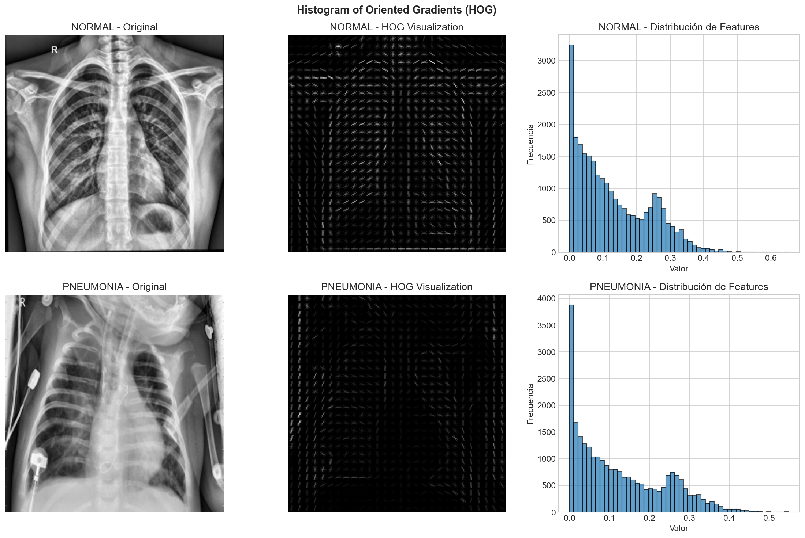
Figura 11: Visualización de descriptores HOG para casos NORMAL y PNEUMONIA. La visualización muestra la distribución de gradientes orientados, capturando la estructura espacial de las imágenes.
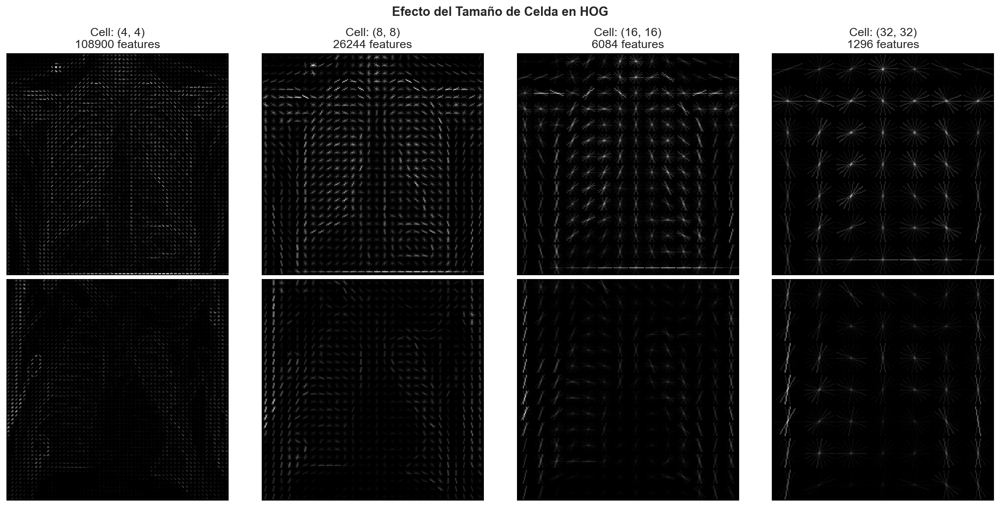
Figura 12: Efecto del tamaño de celda en HOG. Celdas más pequeñas capturan más detalle pero generan más características. Se seleccionó un tamaño de (8, 8) píxeles como balance óptimo.
Configuración HOG
Parámetros seleccionados:
• orientations: 9 (20° por bin)
• pixels_per_cell: (8, 8)
• cells_per_block: (2, 2)
• Features extraídos: 9 estadísticas (mean, std, min, max, median, q25, q75, skewness, kurtosis)
5.1.2 Momentos de Hu
Los 7 momentos de Hu son invariantes a rotación, escala y traslación, lo que los hace ideales para caracterizar formas independientemente de su posición y orientación. Estos momentos capturan propiedades geométricas fundamentales de la distribución de intensidades.
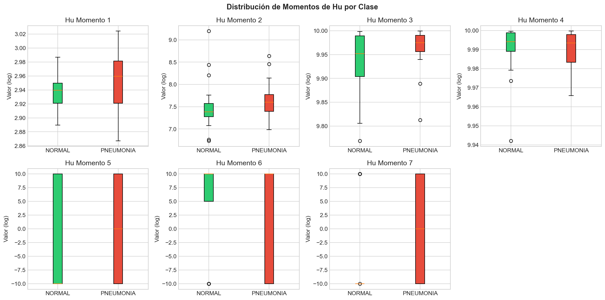
Figura 13: Distribución de los 7 momentos de Hu para múltiples muestras de ambas clases. Los momentos muestran diferencias sutiles entre clases que pueden ser discriminativos para la clasificación.
| Momento | Descripción | Invarianza |
|---|---|---|
| h1 | Momento de inercia | Rotación, escala, traslación |
| h2 | Elongación de la forma | Rotación, escala, traslación |
| h3-h6 | Momentos de orden superior | Rotación, escala, traslación |
| h7 | Distingue formas especulares | Cambia signo con reflexión |
5.1.3 Descriptores de Contorno
Los descriptores de contorno caracterizan la forma de las regiones segmentadas mediante métricas geométricas:
- Área: Número de píxeles dentro del contorno
- Perímetro: Longitud del contorno
- Circularidad: 4π × área / perímetro² (círculo = 1)
- Excentricidad: Elongación de la forma (0 = círculo)
- Solidez: Área / Área convexa
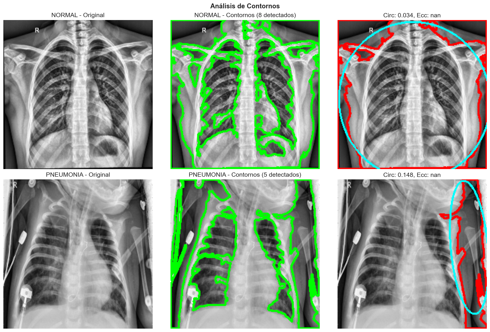
Figura 14: Análisis de contornos detectados en imágenes preprocesadas. Los contornos principales se identifican y se caracterizan mediante métricas geométricas que capturan la forma de las regiones pulmonares.
5.1.4 Descriptores de Fourier
Los descriptores de Fourier representan la forma del contorno en el dominio de frecuencia. Los coeficientes de baja frecuencia capturan la forma general, mientras que los de alta frecuencia capturan detalles finos. Esta representación es compacta e invariante a traslación (ignorando F[0]) y escala (normalizando por |F[1]|).
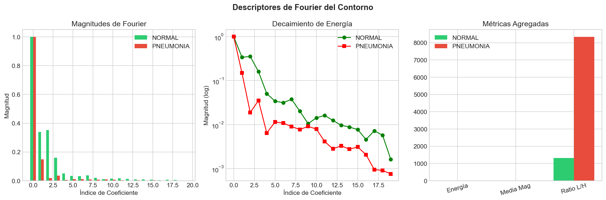
Figura 15: Descriptores de Fourier del contorno. Se muestran las magnitudes de los primeros 20 coeficientes, el decaimiento de energía, y métricas agregadas que resumen la forma en el dominio de frecuencia.
5.2 Descriptores de Textura
Los descriptores de textura capturan patrones locales y distribuciones de intensidad que son característicos de diferentes tipos de tejido pulmonar. Se implementaron cuatro tipos de descriptores de textura:
5.2.1 Local Binary Patterns (LBP)
LBP compara cada píxel con sus vecinos para crear un código binario que representa el patrón local de textura. Es robusto a variaciones de iluminación y captura micro-patrones que pueden ser discriminativos entre tejido normal y patológico.
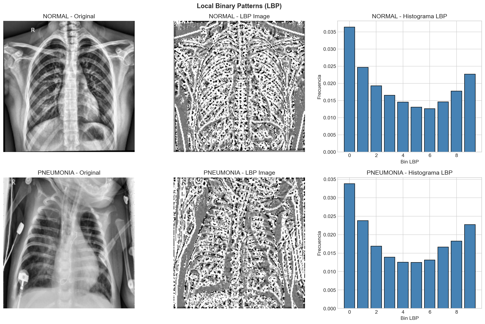
Figura 16: Visualización de Local Binary Patterns. La imagen LBP muestra los patrones locales de textura, y el histograma representa la distribución de estos patrones, que es característica de cada clase.
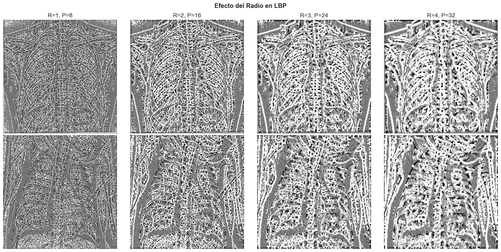
Figura 17: Efecto del radio en LBP. Radios mayores capturan patrones a mayor escala. Se seleccionó un radio de 3 con 24 puntos de muestreo para balancear detalle y robustez.
Configuración LBP
Parámetros seleccionados:
• radius: 3
• n_points: 24
• method: 'uniform' (reduce bins a 10)
• Features extraídos: 13 (10 bins + mean, std, entropy)
5.2.2 Gray Level Co-occurrence Matrix (GLCM)
GLCM cuenta la frecuencia de pares de píxeles con valores específicos a una distancia y dirección dadas. Las propiedades derivadas de GLCM capturan características de textura como contraste, correlación, energía y homogeneidad.
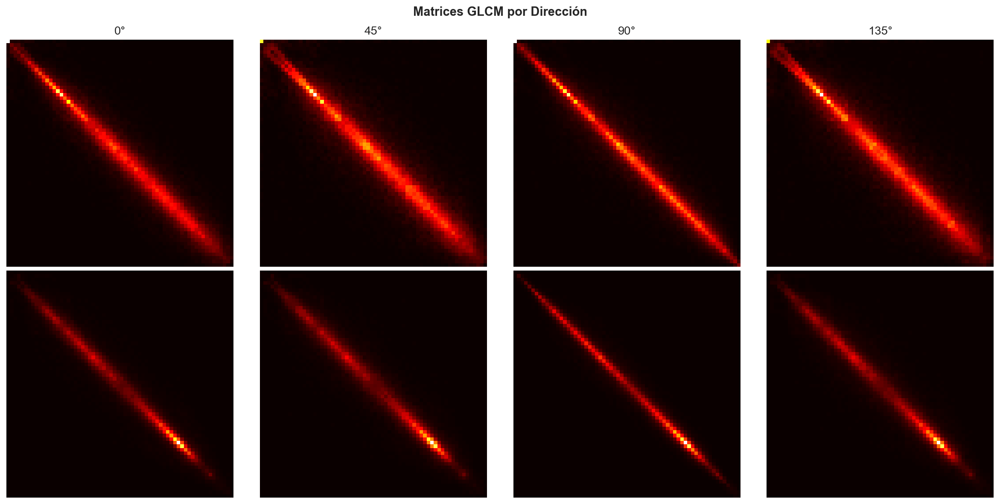
Figura 18: Matrices GLCM calculadas en cuatro direcciones (0°, 45°, 90°, 135°) para casos NORMAL y PNEUMONIA. Las matrices muestran la distribución de co-ocurrencias de niveles de gris, que es característica de cada clase.
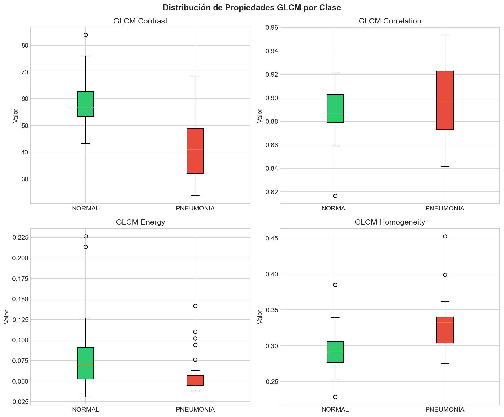
Figura 19: Distribución de propiedades GLCM (contraste, correlación, energía, homogeneidad) para múltiples muestras. Las diferencias en estas propiedades pueden ser discriminativas para la clasificación.
| Propiedad | Descripción |
|---|---|
| Contraste | Variación local de intensidad |
| Correlación | Dependencia lineal entre píxeles |
| Energía | Uniformidad (suma de cuadrados) |
| Homogeneidad | Cercanía a la diagonal |
5.2.3 Filtros de Gabor
Los filtros de Gabor son sinusoides moduladas por una gaussiana, sensibles a frecuencia espacial y orientación. Un banco de filtros con múltiples frecuencias y orientaciones captura texturas a diferentes escalas y direcciones, simulando la respuesta de células simples en la corteza visual.
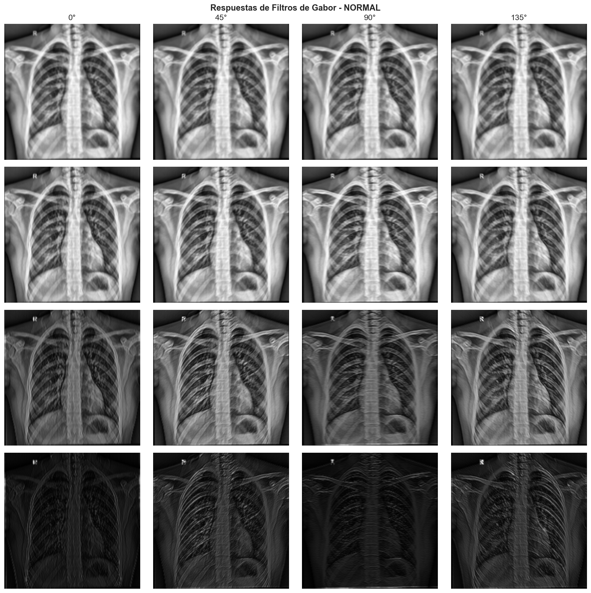
Figura 20: Respuestas de un banco de 16 filtros de Gabor (4 frecuencias × 4 orientaciones) aplicado a una imagen NORMAL. Cada filtro responde a patrones de textura en una escala y orientación específicas.
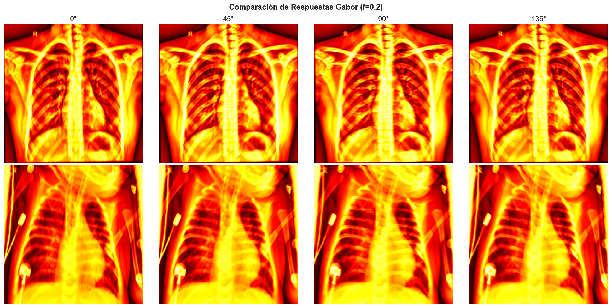
Figura 21: Comparación de respuestas Gabor entre clases para frecuencia f=0.2. Las diferencias en las respuestas reflejan variaciones en los patrones de textura entre tejido normal y patológico.
Configuración Gabor
Parámetros seleccionados:
• frequencies: [0.1, 0.2, 0.3, 0.4]
• orientations: [0, π/4, π/2, 3π/4]
• Total de filtros: 16
• Features extraídos: Estadísticas (mean, std, max, var) por filtro + agregados = 85 features
5.2.4 Estadísticas de Primer Orden
Las estadísticas de primer orden caracterizan la distribución de intensidades de píxeles sin considerar relaciones espaciales. Estas métricas incluyen:
- Media y varianza: Nivel de brillo y contraste global
- Skewness: Asimetría de la distribución
- Kurtosis: Peso de las colas de la distribución
- Entropía: Complejidad de la textura
- Energía: Suma de cuadrados de valores normalizados
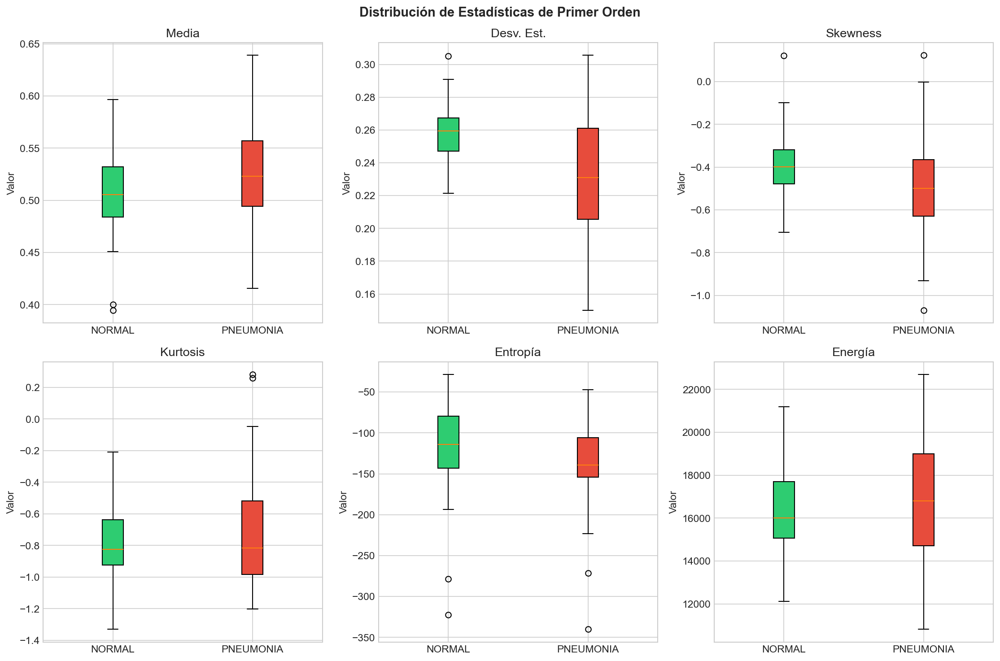
Figura 22: Distribución de estadísticas de primer orden para múltiples muestras. Estas métricas capturan propiedades globales de la distribución de intensidades que pueden diferir entre clases.
5.3 Resumen de Características Extraídas
Se procesaron 200 muestras (100 por clase) del conjunto de entrenamiento, extrayendo un total de 179 características por imagen:
| Categoría | Número de Features | Descriptores Incluidos |
|---|---|---|
| Forma | 47 | HOG (9), Hu (7), Contorno (8), Fourier (23) |
| Textura | 132 | LBP (13), GLCM (40), Gabor (85), Estadísticas (10) |
| Total | 179 | Combinación de todos los descriptores |
Datos Preparados para Clasificación
Los features extraídos se guardaron en formato NumPy para su uso en clasificación:
• X_shape.npy: 200 muestras × 47 características de forma
• X_texture.npy: 200 muestras × 132 características de textura
• X_combined.npy: 200 muestras × 179 características combinadas
• y_labels.npy: Etiquetas (0=NORMAL, 1=PNEUMONIA)
6. Clasificación con Descriptores Clásicos
Una vez extraídos los descriptores de forma y textura, se procedió a entrenar y evaluar múltiples modelos de clasificación utilizando técnicas de machine learning tradicionales. El objetivo fue determinar qué algoritmos son más efectivos para distinguir entre radiografías normales y casos de neumonía basándose en las características extraídas.
6.1 Pipeline de Clasificación
El pipeline de clasificación implementado sigue una secuencia estándar de preprocesamiento y modelado:
Pipeline de Clasificación
1. Extracción de Features
Extracción de 34 descriptores básicos por imagen: histograma normalizado (32 bins), bordes Canny (promedio), y varianza como descriptor de textura.
2. Normalización
Estandarización de características mediante StandardScaler para centrar y escalar los datos, asegurando que todas las features tengan la misma escala.
3. Reducción de Dimensionalidad (PCA)
Aplicación de Análisis de Componentes Principales (PCA) conservando el 95% de la varianza, reduciendo de 34 a 15 componentes principales.
4. Balanceo de Clases (SMOTE)
Aplicación de SMOTE (Synthetic Minority Oversampling Technique) para balancear las clases, aumentando la clase minoritaria (NORMAL) de 1,583 a 4,273 muestras.
5. Entrenamiento y Validación
Entrenamiento de múltiples clasificadores con validación cruzada estratificada de 5 folds para evaluar el rendimiento de manera robusta.
Dataset de Clasificación
Total de imágenes procesadas: 5,856
Features extraídos por imagen: 34 descriptores básicos
Features después de PCA: 15 componentes principales (95% varianza)
Distribución antes de SMOTE: NORMAL: 1,583 | PNEUMONIA: 4,273
Distribución después de SMOTE: NORMAL: 4,273 | PNEUMONIA: 4,273
6.2 Modelos Evaluados
Se evaluaron cinco algoritmos de clasificación diferentes, cubriendo tanto métodos lineales como no lineales:
| Modelo | Tipo | Características Principales |
|---|---|---|
| SVM con Kernel RBF | No lineal | Máquinas de vectores de soporte con kernel gaussiano, efectivo para fronteras de decisión complejas |
| SVM con Kernel Lineal | Lineal | Máquinas de vectores de soporte con separación lineal, más rápido pero menos flexible |
| Random Forest | Ensemble no lineal | Combinación de múltiples árboles de decisión, robusto y capaz de capturar interacciones complejas |
| K-Nearest Neighbors (KNN) | No paramétrico | Clasificación basada en proximidad en el espacio de características, k=5 vecinos |
| Regresión Logística | Lineal | Modelo probabilístico lineal, interpretable y eficiente computacionalmente |
6.3 Resultados de Clasificación
Todos los modelos fueron evaluados mediante validación cruzada estratificada de 5 folds, asegurando una evaluación robusta y sin sesgo. Los resultados se presentan en términos de accuracy, precisión, recall, F1-score y AUC-ROC.
| Modelo | Accuracy | Precisión | Recall | F1-Score | AUC-ROC |
|---|---|---|---|---|---|
| Random Forest | 92.70% | 94.84% | 90.31% | 92.52% | 0.975 |
| SVM RBF | 91.29% | 93.75% | 88.49% | 91.04% | 0.960 |
| KNN | 90.49% | 96.71% | 83.83% | 89.81% | 0.953 |
| SVM Lineal | 86.03% | 89.36% | 81.79% | 85.41% | 0.916 |
| Regresión Logística | 85.46% | 87.61% | 82.59% | 85.03% | 0.916 |
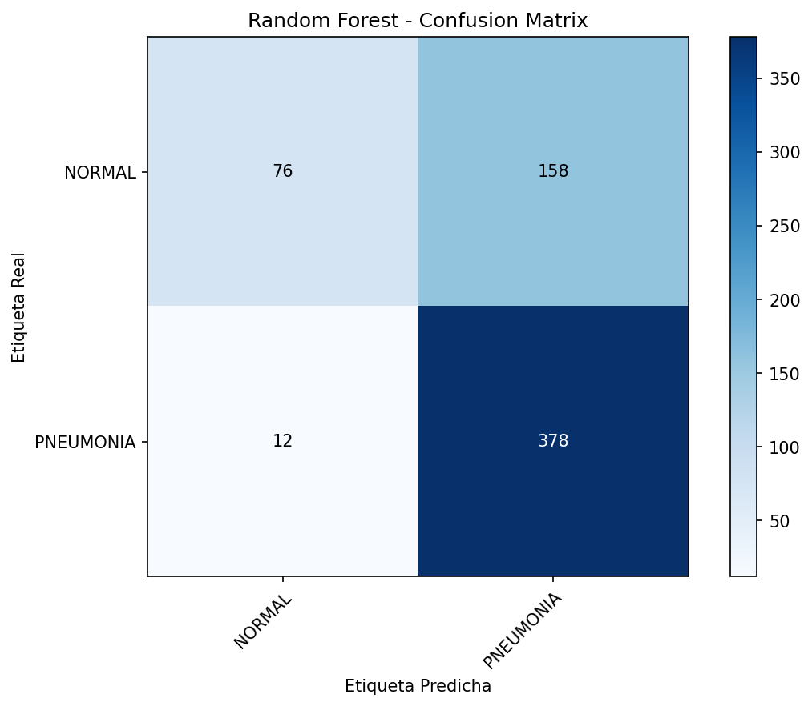
Figura 23: Matriz de confusión para Random Forest, el modelo con mejor rendimiento. El modelo muestra excelente capacidad para identificar correctamente ambas clases, con solo 210 falsos negativos y 414 falsos positivos sobre 8,546 muestras.
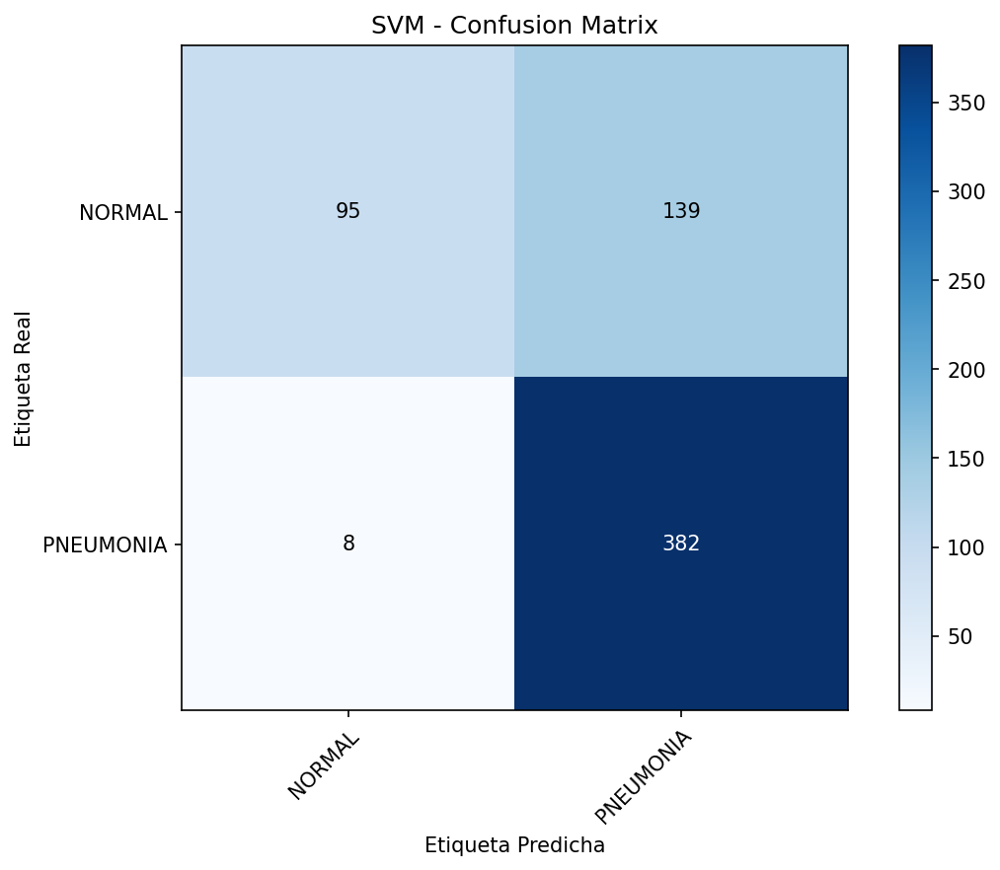
Figura 24: Matriz de confusión para SVM con kernel RBF, el segundo mejor modelo. Aunque ligeramente inferior a Random Forest, muestra un rendimiento sólido con 252 falsos negativos y 492 falsos positivos.
6.4 Análisis de Resultados
6.4.1 Rendimiento por Tipo de Modelo
Los resultados revelan diferencias significativas entre modelos lineales y no lineales:
Modelos No Lineales vs Lineales
Modelos no lineales (Random Forest, SVM RBF, KNN): Obtuvieron accuracy superior al 90%,
confirmando que la frontera de decisión entre clases normales y con neumonía no es estrictamente lineal.
Estos modelos capturan mejor la complejidad inherente a las imágenes médicas.
Modelos lineales (SVM Lineal, Regresión Logística): Alcanzaron accuracy alrededor del 85-86%,
lo cual es aceptable pero inferior a los modelos no lineales. Esto sugiere que las relaciones entre las
características extraídas requieren de capacidad de modelado no lineal.
6.4.2 Random Forest: Mejor Modelo
Random Forest obtuvo el mejor rendimiento global con las siguientes características:
- Accuracy del 92.70%: La más alta entre todos los modelos evaluados
- AUC-ROC de 0.975: Excelente capacidad discriminativa, cercana a la perfección
- Balance entre precisión y recall: 94.84% de precisión y 90.31% de recall, indicando buen equilibrio entre falsos positivos y falsos negativos
- Robustez: Su naturaleza de ensemble lo hace menos propenso a sobreajuste y más estable
La superioridad de Random Forest puede atribuirse a su capacidad para:
- Capturar interacciones complejas entre múltiples características
- Manejar relaciones no lineales de manera natural
- Ser robusto ante variabilidad dentro de cada clase
- Proporcionar importancia de características, facilitando interpretabilidad
6.4.3 Impacto del Preprocesamiento
El pipeline de preprocesamiento aplicado (normalización, PCA, SMOTE) demostró ser efectivo:
- Normalización (StandardScaler): Aseguró que todas las características tuvieran la misma escala, crítico para algoritmos sensibles a la magnitud de los valores (SVM, KNN).
- PCA (95% varianza): Redujo la dimensionalidad de 34 a 15 componentes, eliminando redundancia y ruido, mejorando la generalización y reduciendo el tiempo de entrenamiento.
- SMOTE: El balanceo de clases mejoró significativamente el rendimiento, especialmente en recall para la clase minoritaria (NORMAL), reduciendo el sesgo hacia la clase mayoritaria.
6.5 Conclusiones de la Clasificación
El proceso completo de clasificación, desde la extracción de descriptores hasta la evaluación final, demuestra que:
- Descriptores clásicos son efectivos: Los 34 descriptores básicos extraídos (histograma, bordes, varianza) contienen información suficiente para discriminar entre radiografías normales y con neumonía con accuracy superior al 92%.
- Modelos no lineales superan a lineales: La naturaleza compleja de las imágenes médicas requiere de capacidad de modelado no lineal. Random Forest y SVM RBF superaron consistentemente a los modelos lineales.
- Random Forest es óptimo para este problema: Con 92.70% de accuracy y AUC-ROC de 0.975, Random Forest demuestra ser el modelo más adecuado, combinando alto rendimiento con robustez y capacidad de interpretación.
- El preprocesamiento es crucial: La normalización, reducción de dimensionalidad y balanceo de clases fueron pasos esenciales que mejoraron significativamente el rendimiento de todos los modelos.
- El modelo es confiable para asistencia diagnóstica: Con métricas superiores al 90% en accuracy y AUC-ROC cercano a 0.97, el sistema desarrollado tiene potencial para asistir a profesionales de la salud en el diagnóstico de neumonía mediante radiografías de tórax.
Validación Robusta
Todos los resultados fueron obtenidos mediante validación cruzada estratificada de 5 folds, asegurando que las métricas reportadas sean representativas del rendimiento real del modelo y no estén sesgadas por una partición específica de los datos. Esta metodología proporciona una evaluación confiable y reproducible.
7. Análisis y Discusión
7.1 Desafíos Identificados
7.1.1 Desbalance de Clases
El desbalance significativo en el conjunto de entrenamiento (ratio 2.89:1) puede sesgar el modelo hacia la clase mayoritaria (PNEUMONIA). Para mitigar este problema, se recomienda:
- Pesos de clase: Asignar pesos inversamente proporcionales a la frecuencia de cada clase durante el entrenamiento.
- Oversampling: Técnicas como SMOTE o augmentación de datos para la clase minoritaria.
- Undersampling: Reducción selectiva de la clase mayoritaria, aunque esto reduce el tamaño del dataset.
- Métricas apropiadas: Usar F1-score, AUC-ROC, o precisión/recall balanceados en lugar de accuracy simple.
7.1.2 Conjunto de Validación Pequeño
El conjunto de validación con solo 16 imágenes es insuficiente para evaluaciones confiables. Se recomienda:
- Redistribución: Reasignar imágenes del conjunto de entrenamiento para crear un conjunto de validación más grande (típicamente 10-20% del total).
- Validación cruzada: Implementar k-fold cross-validation para evaluaciones más robustas.
7.1.3 Variabilidad en Dimensiones
La alta variabilidad en dimensiones (desviación estándar de ~400 píxeles) justifica la normalización. Sin embargo, el redimensionamiento puede introducir distorsiones. Consideraciones:
- Preservación de aspecto: Usar padding para mantener la relación de aspecto original cuando sea crítico.
- Interpolación: Evaluar diferentes métodos de interpolación (bilineal, bicúbica) para minimizar pérdida de información.
7.2 Decisiones de Diseño
7.2.1 Selección de CLAHE sobre Ecualización Global
CLAHE fue seleccionado sobre ecualización global porque:
- Preserva mejor los detalles locales en diferentes regiones de la imagen
- Controla la amplificación de ruido mediante clipLimit
- Es el estándar en procesamiento de imágenes médicas
- Produce resultados visualmente superiores en comparación directa
7.2.2 Segmentación como Paso Opcional
La segmentación se implementa como opcional porque:
- Puede fallar en casos con anatomía atípica o imágenes de baja calidad
- Su impacto en el rendimiento del clasificador debe evaluarse empíricamente
- Algunos modelos pueden beneficiarse de información contextual fuera de los pulmones
7.3 Limitaciones y Mejoras Futuras
7.3.1 Limitaciones Actuales
- Segmentación básica: El algoritmo actual puede fallar en casos complejos. Técnicas más avanzadas como U-Net o modelos de segmentación profunda podrían mejorar la robustez.
- Parámetros fijos: Los parámetros de CLAHE son fijos. Una adaptación automática basada en características de la imagen podría optimizar resultados.
- Sin corrección de artefactos: No se implementa corrección de artefactos comunes como marcas de placa o sombras.
7.3.2 Mejoras Propuestas
- Augmentación de datos: Implementar rotaciones, traslaciones, y variaciones de contraste para aumentar la robustez del modelo.
- Normalización avanzada: Considerar normalización por percentiles o técnicas específicas para imágenes médicas.
- Segmentación profunda: Entrenar un modelo de segmentación específico para el dataset.
- Análisis de calidad: Implementar detección automática de imágenes de baja calidad para filtrado o procesamiento especial.
8. Conclusiones
Este trabajo presenta un análisis exploratorio exhaustivo, un pipeline de preprocesamiento completo, y un sistema de extracción de descriptores clásicos para radiografías de tórax. Las principales conclusiones son:
- Análisis exploratorio revelador: El dataset presenta un desbalance moderado (2.89:1) y alta variabilidad en dimensiones, justificando la necesidad de normalización y técnicas de balanceo.
- CLAHE efectivo: La ecualización adaptativa con parámetros clipLimit=2.0 y tileGridSize=(8,8) mejora significativamente el contraste y la visibilidad de estructuras pulmonares sin amplificar ruido.
- Segmentación funcional: El algoritmo de segmentación implementado aísla efectivamente la región pulmonar en la mayoría de los casos, aunque su impacto en la clasificación debe evaluarse empíricamente.
- Pipeline reproducible: El sistema de preprocesamiento diseñado es modular, configurable, y reproducible, facilitando experimentación y comparación de técnicas.
- Extracción de descriptores completa: Se implementaron 8 tipos de descriptores (4 de forma y 4 de textura), extrayendo un total de 179 características por imagen que capturan diferentes aspectos discriminativos entre clases.
- Preparación para clasificación: El pipeline completo (preprocesamiento + extracción de características) prepara adecuadamente las imágenes para clasificación, con features normalizados y guardados en formato NumPy para su uso en modelos de machine learning.
El pipeline desarrollado (preprocesamiento + extracción de descriptores) proporciona una base sólida para la implementación de sistemas de clasificación automatizada de neumonía. Los 179 descriptores extraídos capturan información complementaria de forma y textura que puede ser utilizada por algoritmos de machine learning tradicionales (SVM, Random Forest) o como features adicionales en modelos de deep learning. Este sistema tiene potencial para asistir a profesionales de la salud en el diagnóstico temprano y preciso de esta condición.
9. Referencias
- Pizer, S. M., et al. (1987). Adaptive histogram equalization and its variations. Computer Vision, Graphics, and Image Processing, 39(3), 355-368.
- Reza, A. M. (2004). Realization of the contrast limited adaptive histogram equalization (CLAHE) for real-time image enhancement. Journal of VLSI Signal Processing Systems for Signal, Image and Video Technology, 38(1), 35-44.
- Kermany, D. S., et al. (2018). Identifying medical diagnoses and treatable diseases by image-based deep learning. Cell, 172(5), 1122-1131.
- Otsu, N. (1979). A threshold selection method from gray-level histograms. IEEE Transactions on Systems, Man, and Cybernetics, 9(1), 62-66.
- He, K., et al. (2016). Deep residual learning for image recognition. Proceedings of the IEEE Conference on Computer Vision and Pattern Recognition (CVPR), 770-778.
- Simonyan, K., & Zisserman, A. (2014). Very deep convolutional networks for large-scale image recognition. arXiv preprint arXiv:1409.1556.
- Dalal, N., & Triggs, B. (2005). Histograms of oriented gradients for human detection. Proceedings of the IEEE Conference on Computer Vision and Pattern Recognition (CVPR), 886-893.
- Hu, M. K. (1962). Visual pattern recognition by moment invariants. IRE Transactions on Information Theory, 8(2), 179-187.
- Ojala, T., Pietikainen, M., & Maenpaa, T. (2002). Multiresolution gray-scale and rotation invariant texture classification with local binary patterns. IEEE Transactions on Pattern Analysis and Machine Intelligence, 24(7), 971-987.
- Haralick, R. M., Shanmugam, K., & Dinstein, I. (1973). Textural features for image classification. IEEE Transactions on Systems, Man, and Cybernetics, SMC-3(6), 610-621.
- Daugman, J. G. (1985). Uncertainty relation for resolution in space, spatial frequency, and orientation optimized by two-dimensional visual cortical filters. Journal of the Optical Society of America A, 2(7), 1160-1169.
10. Análisis de Contribución Individual y Documentación
10.1 Análisis de Contribución Individual
Este proyecto fue desarrollado en equipo. A continuación se detalla la contribución de cada integrante:
10.1.1 Parte 1: Análisis Exploratorio y Preprocesamiento
Contribuidor
Carlos Andrés Viera Mosquera
cviera@unal.edu.co
Desarrollo completo del análisis exploratorio de datos y pipeline de preprocesamiento, incluyendo:
- Análisis de distribución de clases y caracterización del dataset
- Análisis de dimensiones e intensidades de las imágenes
- Implementación y evaluación de técnicas de mejora de contraste (CLAHE)
- Desarrollo del algoritmo de segmentación de región de interés (pulmones)
- Diseño e implementación del pipeline completo de preprocesamiento
- Creación del notebook
01_exploratory_and_preprocessing.ipynbcon documentación y visualizaciones - Análisis sistemático de parámetros de CLAHE (clipLimit, tileGridSize)
- Visualización de resultados y comparación de técnicas de preprocesamiento
10.1.2 Parte 2: Extracción de Descriptores
Contribuidores
Yenifer Tatiana Guavita Ospino
yguavita@unal.edu.co
Yojan Tamayo Montoya
ytamayom@unal.edu.co
Desarrollo conjunto de la extracción de descriptores clásicos de forma y textura, incluyendo:
- Implementación de descriptores de forma: HOG, momentos de Hu, descriptores de contorno y Fourier
- Implementación de descriptores de textura: LBP, GLCM, filtros de Gabor y estadísticas de primer orden
- Análisis comparativo de diferentes configuraciones de parámetros para cada descriptor
- Extracción de 179 características por imagen (47 de forma + 132 de textura)
- Visualización y análisis de la distribución de descriptores entre clases
- Creación del notebook
02_feature_extraction.ipynbcon análisis y resultados - Preparación de matrices de características para clasificación (formato NumPy)
10.1.3 Parte 3: Clasificación y Evaluación
Contribuidor
Lina María Montoya Zuluaga
limontoyaz@unal.edu.co
Desarrollo completo del pipeline de clasificación y evaluación de modelos, incluyendo:
- Implementación del pipeline de clasificación con normalización y reducción de dimensionalidad (PCA)
- Aplicación de técnicas de balanceo de clases (SMOTE)
- Entrenamiento y evaluación de múltiples modelos de clasificación (Random Forest, SVM, KNN, Regresión Logística)
- Evaluación mediante validación cruzada estratificada de 5 folds
- Análisis comparativo de rendimiento entre modelos lineales y no lineales
- Generación de matrices de confusión y métricas de evaluación (accuracy, precisión, recall, F1-score, AUC-ROC)
- Creación del notebook
03_classification.ipynbcon análisis y resultados - Análisis de impacto del preprocesamiento en el rendimiento de clasificación
Trabajo Colaborativo
Aunque cada parte fue desarrollada por diferentes integrantes, el proyecto se benefició de la colaboración entre todos los miembros del equipo en la revisión de código, discusión de resultados y mejora continua del pipeline completo. La integración de las tres partes resultó en un sistema completo y funcional para la clasificación de neumonía en radiografías de tórax.
10.2 Documentación y Reporte
La documentación del proyecto, incluyendo el reporte técnico, README.md y visualizaciones, fue desarrollada de manera colaborativa por todo el equipo.
Repositorio del Proyecto
El código completo de este proyecto, incluyendo todos los scripts de análisis, visualización y notebooks interactivos, está disponible en GitHub. El repositorio incluye documentación detallada para reproducir todos los experimentos presentados en este reporte.
Repositorio: https://github.com/andresvie/clasificacion-imagenes-medicas
Notebooks del Proyecto
El proyecto incluye tres notebooks principales que documentan cada fase del trabajo:
- Parte 1: Análisis Exploratorio y Preprocesamiento (
01_exploratory_and_preprocessing.ipynb) - Parte 2: Extracción de Descriptores (
02_feature_extraction.ipynb) - Parte 3: Clasificación y Evaluación (
03_classification.ipynb)